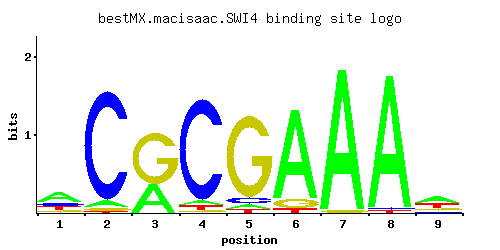

SWI4
YER111C, ART1
DNA binding component of the SBF complex (Swi4p-Swi6p), a transcriptional activator that in concert with MBF (Mbp1-Swi6p) regulates late G1-specific transcription of targets including cyclins and genes required for DNA synthesis and repair
Best-performing DNA-binding model.

View and copy the recommended matrices ↘
A | 0.504 0.047 0.351 0.039 0.041 0.864 0.975 0.965 0.437 C | 0.181 0.922 0.001 0.907 0.067 0.001 0.001 0.018 0.113 G | 0.136 0.025 0.643 0.016 0.860 0.092 0.023 0.002 0.178 T | 0.179 0.006 0.005 0.038 0.032 0.043 0.001 0.015 0.272
A | 50 4 35 3 4 86 97 96 43 C | 18 92 0 90 6 0 0 1 11 G | 13 2 64 1 86 9 2 0 17 T | 17 0 0 3 3 4 0 1 27
A | 0.45 -1.92 0.09 -2.10 -2.05 0.99 1.11 1.10 0.31 C | 0.01 1.63 -5.19 1.62 -0.99 -5.19 -5.19 -2.30 -0.47 G | -0.28 -1.97 1.27 -2.42 1.56 -0.67 -2.06 -4.50 -0.01 T | -0.58 -3.98 -4.16 -2.13 -2.30 -2.01 -5.77 -3.06 -0.16
Alternative candidate matrices 4
Historical matrix candidates from the original ScerTF database. Expand a source to inspect its original logo, scores, and matrix values.
SWI4Badis et. al.P = 1.78e-31View matrix ↘
SWI4Foat et. al.P = 2.93e-31View matrix ↘
SWI4Harbison et. al.P = 7.20e-33View matrix ↘
SWI4Pachkov et alP = 3.71e-35View matrix ↘
Gene-level annotations and interactions.
Genes bound in ChIP-chip experiments 252 genes
YBL002W, YBL003C, YBL023C, YBL029W, YBR069C, YBR070C, YBR071W, YBR077C, YBR078W, YBR079C, YBR112C, YBR114W, YBR158W, YBR161W, YBR162C, YBR162W-A, YCR061W, YCR062W, YCR064C, YCR065W, YCR073C, YDL003W, YDL047W, YDL055C, YDL126C, YDL127W, YDL185W, YDL187C, YDL211C, YDL227C, YDR010C, YDR011W, YDR072C, YDR073W, YDR133C, YDR134C, YDR154C, YDR155C, YDR156W, YDR157W, YDR158W, YDR224C, YDR225W, YDR227W, YDR261C, YDR309C, YDR345C, YDR441C, YDR442W, YDR451C, YDR452W, YDR453C, YDR500C, YDR501W, YDR507C, YDR508C, YDR509W, YDR510W, YDR513W, YDR524C, YDR525W, YDR526C, YEL007W, YEL017C-A, YEL017W, YEL040W, YER001W, YER011W, YER070W, YER078C, YER079W, YER111C, YER112W, YER145C, YER146W, YER177W, YFR017C, YGL038C, YGL096W, YGL147C, YGL179C, YGL227W, YGL253W, YGR013W, YGR014W, YGR041W, YGR050C, YGR060W, YGR086C, YGR109C, YGR109W-A, YGR109W-B, YGR110W, YGR140W, YGR151C, YGR152C, YGR153W, YGR189C, YGR190C, YGR193C, YGR221C, YGR234W, YGR249W, YGR279C, YHL012W, YHL013C, YHR061C, YHR063C, YHR149C, YHR150W, YHR193C, YHR194W, YHR205W, YIL012W, YIL013C, YIL056W, YIL121W, YIL122W, YIL123W, YIR020C, YJL158C, YJL184W, YJL185C, YJL186W, YJL187C, YJL194W, YJL196C, YJR044C, YJR047C, YJR048W, YJR054W, YJR145C, YJR146W, YJR147W, YJR148W, YKL007W, YKL008C, YKL044W, YKL094W, YKL096W, YKL096W-A, YKL097C, YKL103C, YKL109W, YKL110C, YKL180W, YKR011C, YKR013W, YKR040C, YKR042W, YKR093W, YLL012W, YLL013C, YLR044C, YLR055C, YLR056W, YLR084C, YLR121C, YLR139C, YLR142W, YLR255C, YLR256W, YLR256W-A, YLR300W, YLR332W, YLR342W, YLR437C, YLR438W, YLR439W, YML007W, YML008C, YML026C, YML027W, YML052W, YML053C, YML100W, YML101C, YML102C-A, YMR006C, YMR007W, YMR016C, YMR017W, YMR037C, YMR070W, YMR135C, YMR136W, YMR144W, YMR145C, YMR179W, YMR195W, YMR199W, YMR261C, YMR262W, YMR279C, YMR304C-A, YMR305C, YMR306C-A, YMR306W, YMR307W, YMR308C, YNL178W, YNL231C, YNL289W, YNL295W, YNL297C, YNL298W, YNL300W, YNL301C, YNR016C, YNR017W, YNR018W, YNR044W, YOL011W, YOL012C, YOL019W, YOL113W, YOL114C, YOL154W, YOR138C, YOR140W, YOR178C, YOR246C, YOR247W, YOR248W, YOR315W, YOR344C, YOR372C, YOR373W, YOR378W, YPL016W, YPL017C, YPL024W, YPL025C, YPL056C, YPL081W, YPL082C, YPL124W, YPL126W, YPL127C, YPL163C, YPL177C, YPL230W, YPL267W, YPR009W, YPR013C, YPR035W, YPR119W, YPR120C, YPR149W, YPR158C-C, YPR158C-D, YPR159W
Genes affected by TF deletion 252 genes
YBR004C, YBR006W, YER145C, YHL048W, YKR012C, YMR041C, YNL016W, YOL047C, YEL075C, YHR146W, YLR463C, YLR465C, YLR467W, YPL015C, YBR005W, YCL049C, YHL015W, YKR042W, YKR013W, YMR009W, YOL011W, YMR266W, YDL063C, YDL127W, YEL076C, YGR120C, YJL048C, YJL116C, YLR089C, YLR059C, YLR462W, YLR464W, YLR405W, YLR466W, YMR191W, YNL274C, YOR038C, YPL014W, YPL016W, YBR092C, YGR001C, YGR033C, YLL066C, YMR103C, YNL115C, YOR285W, YBR287W, YDR280W, YER053C, YGL071W, YGR248W, YGR250C, YML027W, YNL333W, YNR028W, YBR067C, YMR104C, YNL116W, YBL024W, YDR309C, YDR281C, YER029C, YGL076C, YGR213C, YIL051C, YJL144W, YLR121C, YMR251W-A, YMR315W, YNL300W, YNL332W, YNL336W, YPL111W, YPL081W, YBR010W, YBR012C, YCR050C, YLR252W, YMR020W, YNL030W, YBR169C, YGL053W, YKL051W, YMR228W, YOR009W, YOR043W, YOR385W, YBR009C, YCL064C, YER150W, YHL049C, YIL117C, YJR025C, YMR023C, YML100W, YDR225W, YER001W, YGR131W, YMR199W, YNL248C, YOR390W, YBR070C, YFR017C, YLR348C, YMR084W, YMR145C, YOL144W, YOR355W, YBR265W, YDL234C, YER038C, YJL159W, YKL149C, YPL088W, YPL122C, YGR008C, YIR035C, YIR010W, YJR156C, YLL067C, YLR349W, YOL143C, YOR354C, YBL032W, YCL025C, YBR296C, YDL201W, YDR346C, YER064C, YJL158C, YNR001C, YNR038W, YPL087W, YER189W, YJR070C, YKR061W, YKR093W, YML133C, YOL058W, YPL256C, YAR028W, YGR138C, YGR142W, YLR040C, YLR420W, YNL289W, YDR081C, YER158C, YER188W, YER190W, YGR295C, YKR056W, YLR258W, YML132W, YNL096C, YNL066W, YNR072W, YOL032W, YMR008C, YAR027W, YGR108W, YGR139W, YGR110W, YLR041W, YNL256W, YPL030W, YPL032C, YPL063W, YFL059W, YGR019W, YGR079W, YIR044C, YLR356W, YMR120C, YNL197C, YCL038C, YGR234W, YLR142W, YML070W, YDR174W, YFR022W, YIR043C, YLR355C, YMR146C, YNL126W, YNL160W, YNL192W, YBR302C, YHR218W, YJL225C, YJL196C, YKL216W, YLR197W, YNR009W, YNR044W, YPL163C, YBR054W, YBL111C, YBR028C, YLR297W, YLR299W, YMR006C, YNL075W, YOR247W, YAR033W, YAL062W, YDL124W, YJL079C, YKL103C, YLR050C, YLR054C, YLR455W, YCR007C, YDR055W, YGL255W, YLR300W, YMR001C, YMR062C, YMR034C, YMR007W, YOL007C, YOR248W, YPL198W, YGR149W, YHR135C, YKL096W-A, YLR452C, YMR250W, YFR028C, YLR366W, YMR093W, YCL040W, YCL042W, YGL101W, YLR178C, YML052W, YFL062W, YFL064C, YFL068W, YHR104W, YHR108W, YLR327C, YLR359W, YOL097C, YOR338W, YPR041W, YDR303C, YJL172W, YKL163W, YMR277W, YNR019W, YNR052C
Genes supported by both experiments 35 genes
YBR070C, YDL127W, YDR225W, YDR309C, YER001W, YER145C, YFR017C, YGR110W, YGR234W, YJL158C, YJL196C, YKL096W-A, YKL103C, YKR013W, YKR042W, YKR093W, YLR121C, YLR142W, YLR300W, YML027W, YML052W, YML100W, YMR006C, YMR007W, YMR145C, YMR199W, YNL289W, YNL300W, YNR044W, YOL011W, YOR247W, YOR248W, YPL016W, YPL081W, YPL163C
Predicted TF–TF partners 14 genes
ABF1, FKH1, FKH2, MBP1, MET28, RDS1, REB1, RTG3, SKN7, STB1, STB2, STB3, SUT1, SWI6